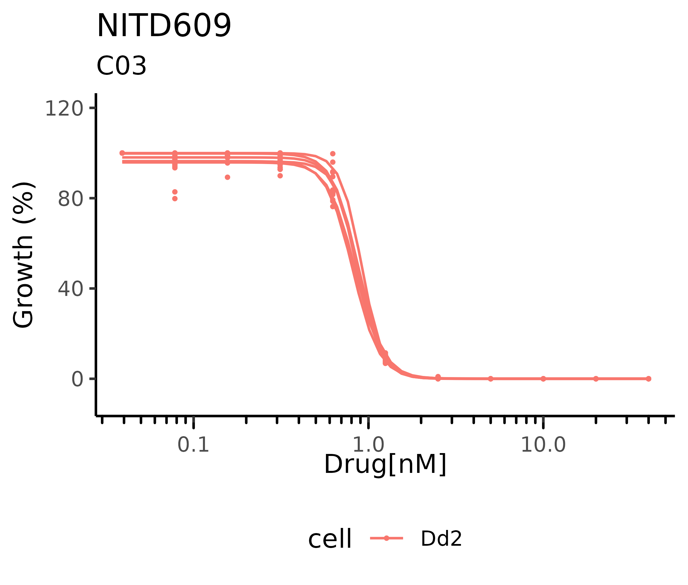

Example files
batchCurve comes bundled with a number of example dose-response sample files:
# lists the names of available example data files
batchCurve_example()
#> [1] "compare_results.csv" "example_meta.csv" "example1_data.csv"
#> [4] "example1_results.csv" "plan_IC50s.csv" "TRno0000.CSV"
#> [7] "TRno0001.CSV" "TRno0002.CSV" "TRno0003.CSV"
#> [10] "TRno3735.CSV" "TRno3965.CSV" "TRno4849.CSV"
#> [13] "TRno4850.CSV"
r <- utils::read.csv(batchCurve_example("example1_results.csv"))The results csv from the fit_data() function will contain all the data in the users meta file with the fitted model coefficients appended. A randomly generated key identifier is attached to each assay to prevent clashes from repeat assays and link normalised data.
IC50_key |
compound |
cell |
IC50 |
min |
max |
hill_slope |
|---|---|---|---|---|---|---|
yPNscyxJc1lEeY |
04-21-C01 |
Dd2 |
0.3971 |
1.5366 |
98.0675 |
1.6734 |
tHxIekcYzFRuCg |
06-21-C37 |
Dd2 |
0.4092 |
7.7123 |
99.3641 |
3.9175 |
MpaETPbbOdCquJ |
06-21-C37 |
3D7 |
0.6091 |
8.5220 |
97.4135 |
4.3607 |
u1ImEVD9hNIcpd |
Torin2 |
Dd2 |
0.0018 |
7.9017 |
99.0182 |
2.9709 |
d <- utils::read.csv(batchCurve_example("example1_data.csv"))The data file from the fitting function contains normalised replicate data for each assays dose range. The key value uniquely link each assay results to the data.
key |
dose |
replicate_1 |
replicate_2 |
replicate_3 |
|---|---|---|---|---|
6eoWlmoDFUAo3T |
10.0000 |
100.0000 |
96.4100 |
98.7700 |
6eoWlmoDFUAo3T |
5.0000 |
100.0000 |
96.4100 |
98.7700 |
6eoWlmoDFUAo3T |
2.5000 |
100.0000 |
96.4100 |
98.7700 |
6eoWlmoDFUAo3T |
1.2500 |
100.0000 |
96.4100 |
98.7700 |
6eoWlmoDFUAo3T |
0.6250 |
3.1500 |
3.1500 |
3.1500 |
Visualise a curve
The [plot_fit()] function allows for batch plotting of each assay. It returns a list object of plots for inspection and exports all plots into a pdf. By default plots are grouped by compound and coloured differently for each cell. In order to easy interpretation IC50 < 0.1 will be converted to nM scale. The index variable in the meta file is used as the subtitle and can therefore be used as needed.

Quality
The function fits a 4 parameter log-logistic model as this covers 99% of dose-response circumstances. It is up to the user to establish quality based on fit, dose range, signal and replicate variability.
Assays that are deemed unfit can be removed from the results file before replotting if needed (there is no need to filter the data.csv file).